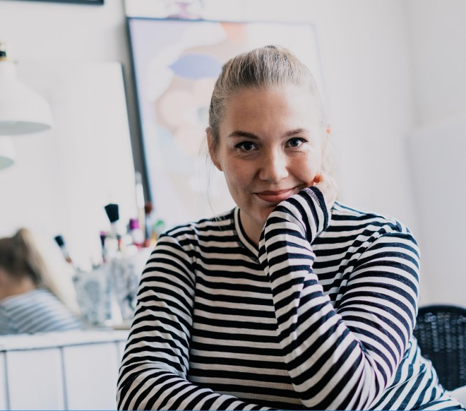
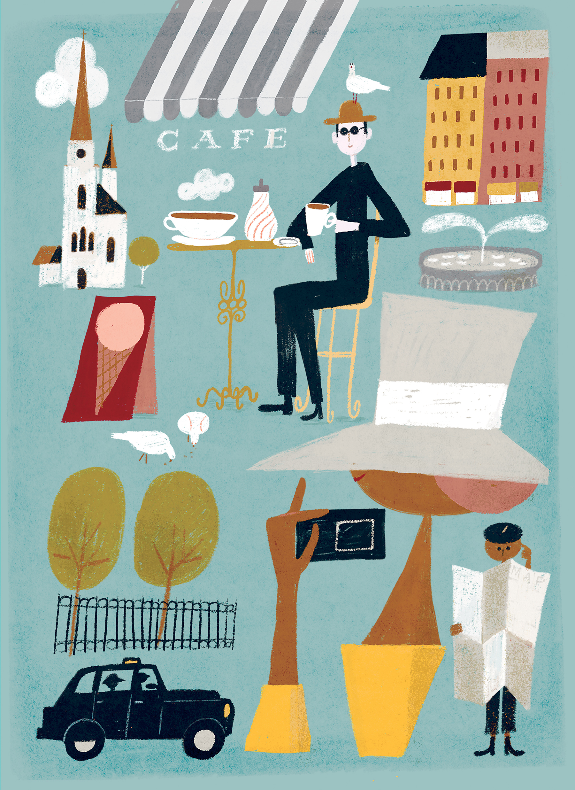

Sanna Mender
Probabilmente una delle illustratrici finlandesi più prolifiche oggi attive, il lavoro allegro di Sanna Mander evoca cataloghi e illustrazioni editoriali degli anni '60 con un tocco contemporaneo.. Nel 2006, ha vinto il Cannes Young Creatives e nel 2007 è stata premiata come Junior of The Year al concorso finlandese di pubblicità e design Best of the Year.


Le sue illustrazioni possono essere applicate a vari prodotti, design di imballaggi, poster, illustrazioni editoriali e tessuti. Ispirate dalla lussureggiante flora e fauna che la circondano nella sua nativa Finlandia, le immagini di Sanna sono inni misti alle gioie imprevedibili e disordinate del mondo che la circonda.

